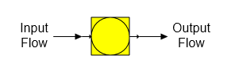

Reactor A reactor station is used to model chemical reactions that occur between different components in a flow stream; for example, lime rock to quick lime and CO2, CaO and CO2 to CaCO3, etc.

General Features A reactor station can react up to three components in the input flow stream to produce up to three different components in the output flow. Also, a reactor station can be used to change the solubility coefficients and/or color of a flow stream even if there is no reaction between any of the components in the flow stream. This feature is useful for controlling the sucrose solubility, or color in any flow stream. Phase changes are not considered - other than those specified by the reaction equations, but the temperature of the output flow will be a result of: (1) the heat content of the input flow, (2) the heat of reaction from any component reactions, and (3) the component fractions of the output flow.